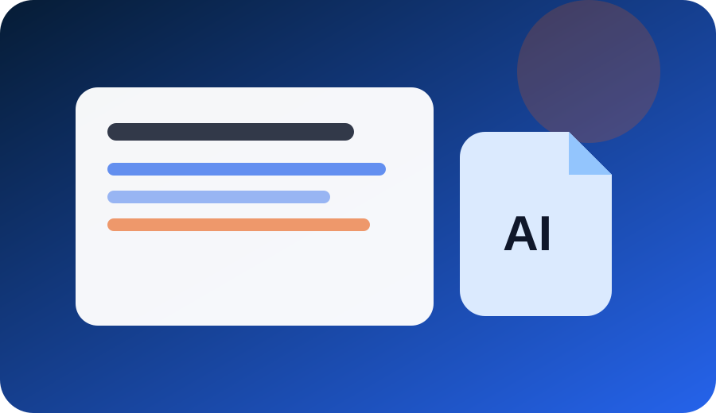
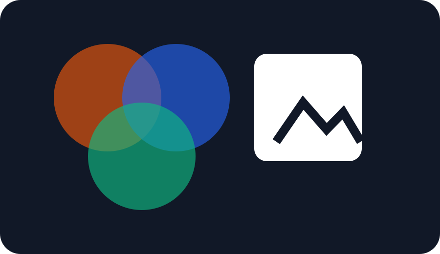
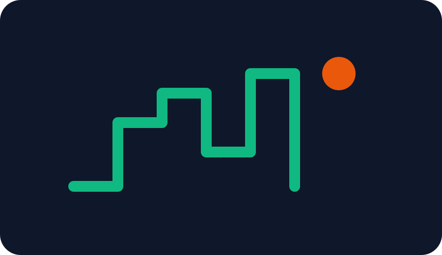
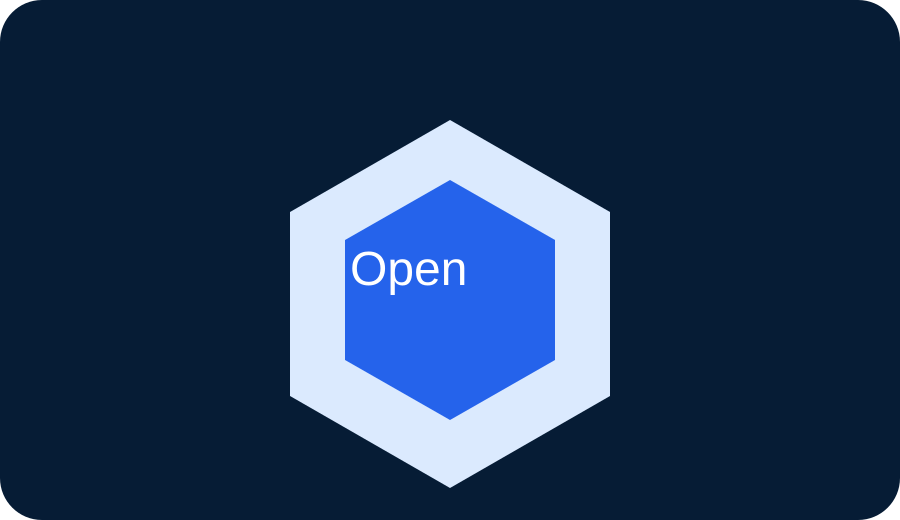

ChatGPT vs Claude vs Gemini
مقارنة عملية لاختيار أفضل مساعد AI حسب الاستخدام.
اقرأ المقال →مقالات عملية مرتبة حسب التخصص تساعدك على اختيار الأدوات وبناء محتوى ومشروع رقمي قابل للنمو.
أحدث المقالات المنشورة داخل الموقع.

مقارنة عملية لاختيار أفضل مساعد AI حسب الاستخدام.
اقرأ المقال →ChatGPT وJasper وCopy.ai وNotion AI للكتابة والتسويق.
اقرأ المقال →
Midjourney وLeonardo وCanva وStable Diffusion.
اقرأ المقال →
أدوات للمحتوى والتحليل والتحويلات.
اقرأ المقال →Semrush وAhrefs وSurfer SEO وChatGPT.
اقرأ المقال →Zapier وMake وn8n وLangChain لبناء workflows ذكية.
اقرأ المقال →خطة 90 يوم باستخدام AI وSEO والمحتوى.
اقرأ المقال →Runway وPika وCapCut وDescript لصناعة الفيديو.
اقرأ المقال →
ElevenLabs وWhisper وDescript وAudacity.
اقرأ المقال →GitHub Copilot وCursor وChatGPT وDeepSeek.
اقرأ المقال →Notion AI وClickUp وSlack وZapier.
اقرأ المقال →Shopify Magic وChatGPT وCanva وKlaviyo.
اقرأ المقال →Canva وBuffer وHootsuite وChatGPT.
اقرأ المقال →Power BI وTableau وGoogle Analytics وChatGPT.
اقرأ المقال →Zendesk وIntercom وFreshdesk وChatGPT.
اقرأ المقال →